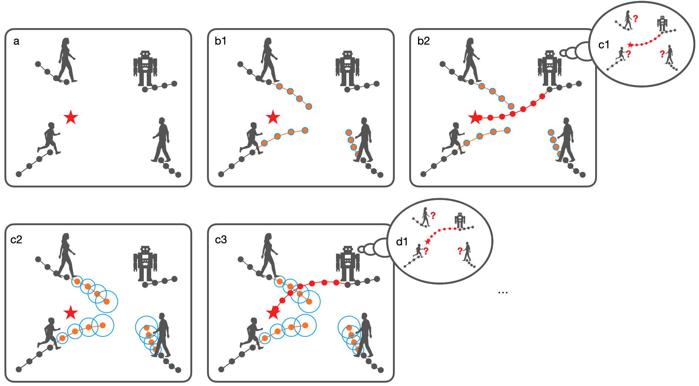
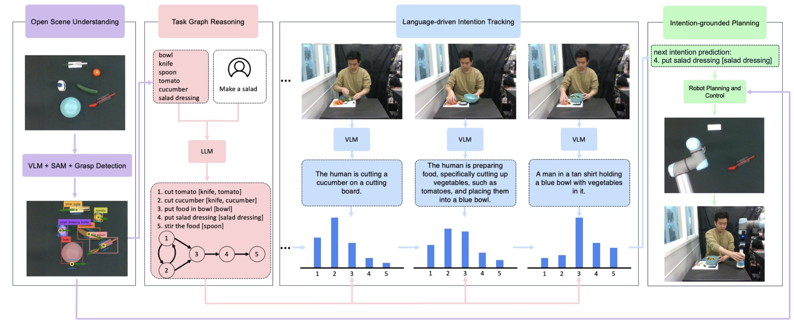
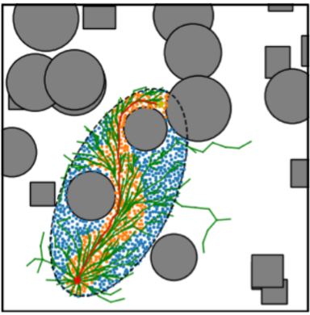
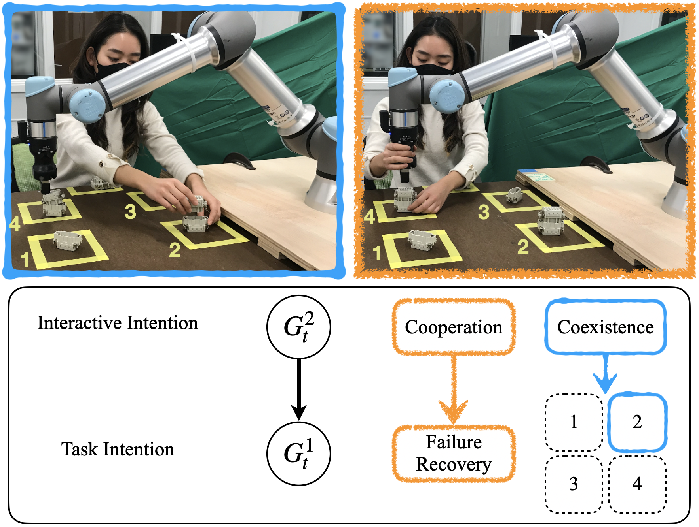
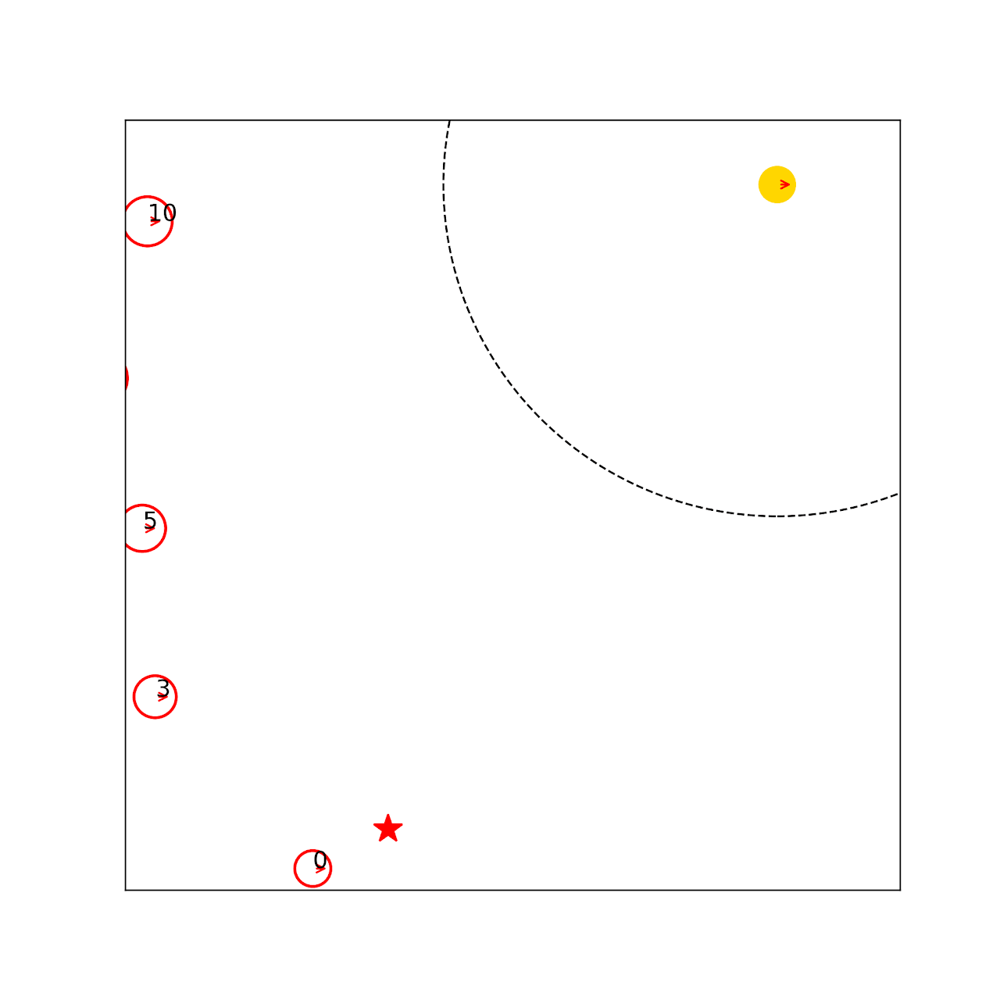
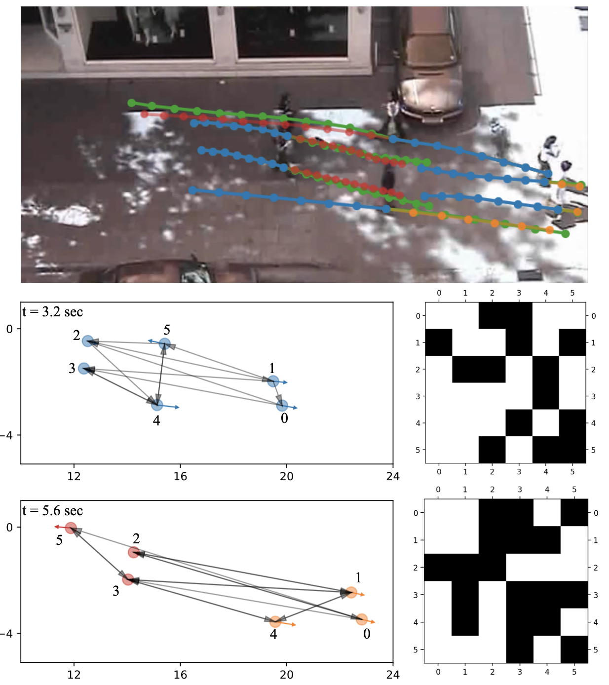
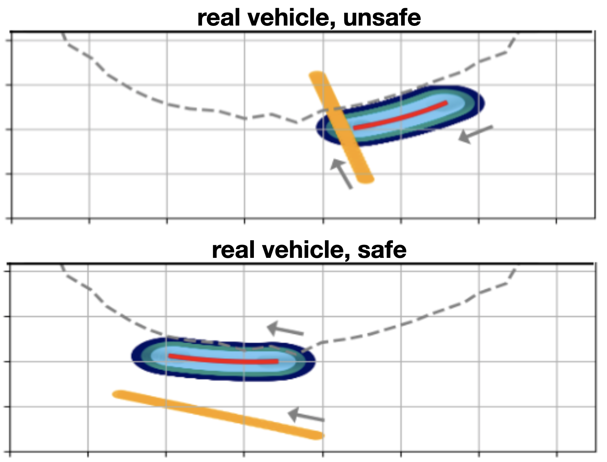
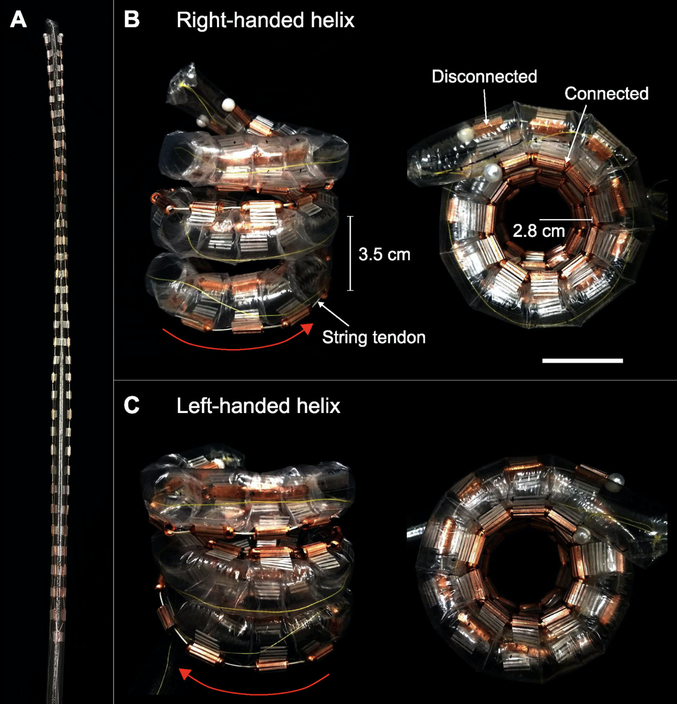
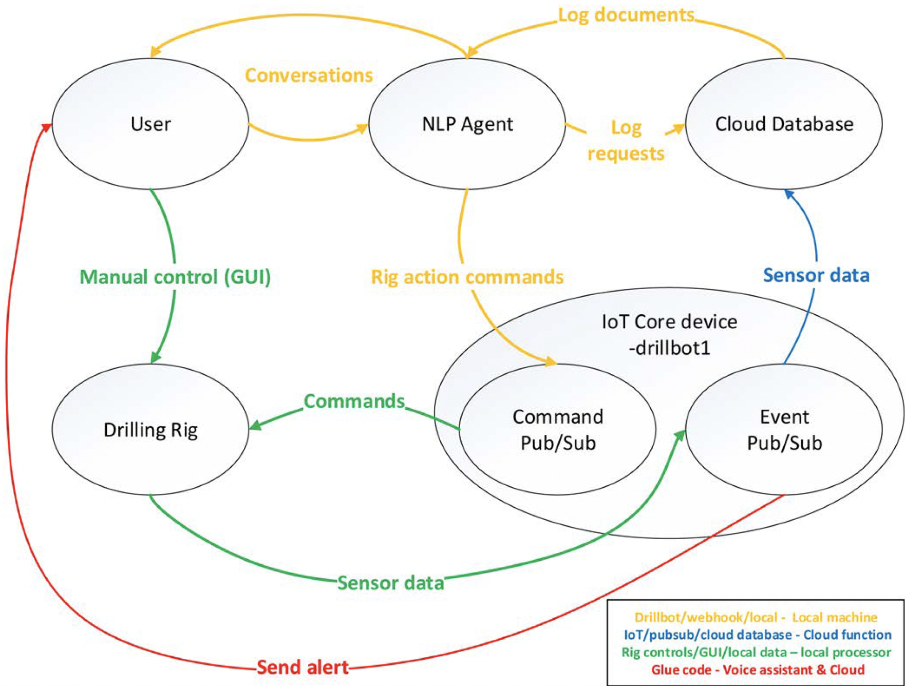
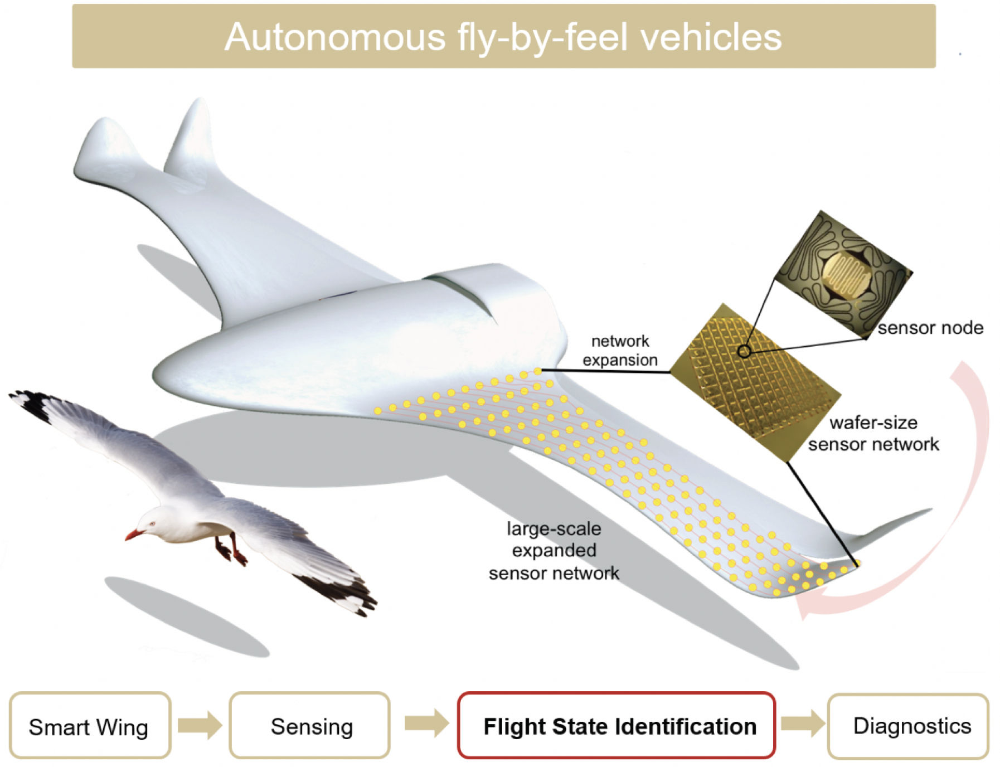

Zhe Huang
|
About me
I received the Ph.D. degree in Electrical and Computer Engineering from University of Illinois Urbana-Champaign in 2024, where I was honored to be supervised by Prof. Katherine Driggs-Campbell. I am also a research scientist at Meta. I received the M.S. degree in Mechanical Engineering from Stanford University in 2019 and the B.Eng. degree in Energy and Power Engineering from Xi'an Jiaotong University in 2017.
My research is focused on building Human-Centered Embodied AI to enable robots to safely and efficiently interact with humans and the physical world. A major challenge to achieve this goal is that existing fully autonomous robots do not have sufficient understanding of human behavior, and act conservatively with humans around to guarantee safety of humans and themselves, which is at the cost of efficiency. I develop human-centered autonomy frameworks including human prediction and robot planning with human intent and human trajectory as interface for robots to achieve challenging human-involved open-world tasks. My works integrate well-established algorithmic primitives and novel machine learning techniques to offer efficiency improvement under safety guarantees. My works illustrate generality of Human-Centered Embodied AI across various applications including autonomous driving, crowd navigation, collaborative manufacturing, and collaborative cooking.
My research areas are Robotics, Artificial Intelligence, and Human-Robot Interaction.
My Ph.D. thesis: Bridging Prediction and Planning for Human-Centered Autonomy.
News
[2025.05] Our work Implementation and Validation of Obstacle Avoidance Algorithms on a Self-Balancing Robot is accepted by CASE 2025.
[2025.01] Our work Towards Real-Time Generation of Delay-Compensated Video Feeds for Outdoor Mobile Robot Teleoperation is accepted by ICRA 2025.
[2024.10] I passed my Ph.D. thesis defense.
[2024.08] Our work Interaction-aware Conformal Prediction (ICP) is accepted by WAFR 2024.
[2024.07] I am excited to join Meta as a research scientist.
[2024.06] Our work Topology-Guided ORCA is accepted by Unsolved Problems in Social Robot Navigation workshop in conjunction with RSS 2024.
[2024.06] Our Embodied AI paper LIT is selected for Spotlight Presentation by the 3rd Workshop on Computer Vision in the Wild at CVPR 2024.
[2024.05] Our Embodied AI paper LIT is accepted by both the 3rd Workshop on Computer Vision in the Wild and the 5th Annual Embodied AI Workshop at CVPR 2024.
[2024.04] We have released our main implementation for NIRRT* on the GitHub repo nirrt_star.
[2024.02] We have released our ROS implementation for NIRRT* on the GitHub repo PNGNav.
[2024.01] Our path planning paper NIRRT* is accepted by ICRA 2024.
[2023.01] Two papers Hierarchical Intetion Tracking and Intention Aware CrowdNav are accepted by ICRA 2023.
[2022.12] I finished my internship at Amazon Robotics as an Advanced Robotics Research Co-op.
[2022.12] I am excited to attend the 5th Robot Learning Workshop: Trustworthy Robotics at NeurIPS 2022 as an invited speaker, giving a talk titled “Representing Interactions for Robot Navigation” jointly with Prof. Katherine Driggs-Campbell.
[2022.08] I am excited to join Amazon Robotics as an Advanced Robotics Research Co-op.
[2022.08] I finished my internship at Nuro as a PhD Intern.
[2022.08] We will present our work Seamless Interaction Design with Coexistence and Cooperation Modes for Robust Human-Robot Collaboration on CASE 2022 Special Session on Adaptive and Resilient Cyber-Physical Manufacturing Networks.
[2022.05] I am excited to join Nuro as a PhD Intern.
[2022.05] Our work Insights from an Industrial Collaborative Assembly Project: Lessons in Research and Collaboration is selected for Spotlight Presentation at ICRA 2022 Workshop on Collaborative Robots and the Work of the Future.
[2022.03] I am honored to attend Robotics Seminar @ Illinois as an invited speaker giving a talk titled “Pedestrian Trajectory Prediction Meets Social Robot Navigation” jointly with Dr. Shuijing Liu.
[2022.02] Our demo “Human-Robot Collaboration in Industrial Assembly Tasks” is awarded the Best Robotics Demo in Coordinated Science Laboratory Student Conference.
[2022.01] We will present GST on ICRA 2022.
[2021.12] We have released our code for GST on the GitHub repo gst.
[2021.12] Our work GST is accepted by RA-L.
[2021.06] We have released our code and pretrained models for MIF-WLSTM on the GitHub repo mifwlstm.
[2021.04] I am honored to attend Robotics Seminar @ Illinois as an invited speaker giving a talk on my work Long-Term Pedestrian Trajectory Prediction Using Mutable Intention Filter and Warp LSTM.
[2020.11] Our work MIF-WLSTM is accepted by RA-L.
[2020.05] One paper is accepted by ITSC 2020.
[2020.01] One paper is accepted by RA-L and ICRA 2020.
Publications
|  | Interaction-aware Conformal Prediction for Crowd Navigation |
|  | LIT: Large Language Model Driven Intention Tracking for Proactive Human-Robot Collaboration – A Robot Sous-Chef Application |
|  | Neural Informed RRT*: Learning-based Path Planning with Point Cloud State Representations under Admissible Ellipsoidal Constraints |
|  | Hierarchical Intention Tracking for Robust Human-Robot Collaboration in Industrial Assembly Tasks |
|  | Intention Aware Robot Crowd Navigation with Attention-Based Interaction Graph |
|  | Learning Sparse Interaction Graphs of Partially Detected Pedestrians for Trajectory Prediction |
 |
Long-Term Pedestrian Trajectory Prediction Using Mutable Intention Filter and Warp LSTM |
|  | Online Monitoring for Safe Pedestrian-Vehicle Interactions |
|  | 3D Electromagnetic Reconfiguration Enabled by Soft Continuum Robots |
|  | A Voice Interface for Drilling Systems |
|  | High Accuracy Flight State Identification of a Self-Sensing Wing via Machine Learning Approaches |